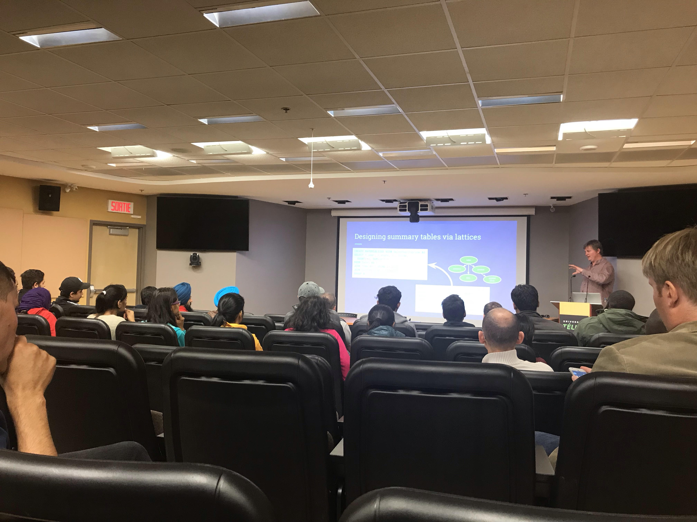

Nous organisons une série d'événements intitulée « technolab » à Montréal, dans les bureaux de la TÉLUQ (métro Rosemont), à l'Université du Québec. Ils sont ouverts à tous et visent à nous amener à discuter les technos dans une ambiance conviviale. Aucune compétence technique n'est nécessaire, mais vous devez avoir un intérêt pour l'informatique.
Nos bureaux sont au 5800, rue Saint-Denis, Bureau 1105, Montréal (Québec). Tous sont invités. Si vous voulez vous joindre à nous, vous pouvez écrire à l'organisateur pour obtenir des détails.
Jean-François Couchot est maître de conférences à l'IUT de Belfort-Montbéliard (Franche).
Salle 11.051, 28 février 2019, 12h (midi)
Un générateur de nombres pseudo-aléatoires est un algorithme capable de construire des séquences de nombres semblables à celles qui seraient obtenues en notant par exemple les numéros de lancers d'un dé non pipé. L'histoire de génération de nombres aléatoires est longue, riche et variée. Dans cet exposé, on se restreint à une minuscule partie, celle qui concerne les générateurs de nombres pseudo aléatoires chaotiques. Comme il s'agit de science, on se base sur du chaos solide, pas approximatif: les systèmes dynamiques chaotiques de DEVANEY (1989) étudiés par Pr. C. GUYEUX dans sa thèse. Ce dernier a notamment montré en 2009 comment construire un générateur de nombres pseudo-aléatoires chaotique selon cette théorie. L'exposé commencera donc à cette date. Dès lors, de nombreux générateurs ont été produits – tous chaotiques – de plus en plus rapides et dont la qualité statistique s'est accrue progressivement. Des challenges ont été relevés, des échecs souvent rencontrés. Roma non uno die aedificata est. L'exposé retracera cette micro-histoire scientifique, s'intéressera à quelques points techniques (le moins possible). Il mettra en avant les avancées, les parenthèses qu'il a fallu ouvrir (puis refermer), les obstacles qu'il a fallu surmonter, les femmes et les hommes qui ont contribué directement ou sans le savoir.
Daniel Lemire est professeur d'informatique à la TÉLUQ.
Salle 11.051, 19 novembre 2018, 12h (midi)
Charles-Gouin Vallerand est professeur d'informatique à la TÉLUQ. (Transparents.)
Salle 12.143, 19 octobre 2018, 12h (midi)
Julian Hyde est l'auteur de Mondrian et de Calcite, des logiciels utilisés partout dans le monde en science des données et gestion des mégadonnées. (Transparents.)
Salle 11.051, 24 septembre 2018, 12h (midi)
L'intelligence artificielle permet aux machines de comprendre, en partie, le sens des mots et des images. À cette fin, une technique récente et attrayante est celle des word embedding (ou plongement lexical en français). Ce type de modèle permet notamment de faire de l'arithmétique sur les mots et concepts: 'king' + 'woman' - 'man' = 'queen'. Matt Ranger nous montrera comment on peut appliquer une telle technique pour analyser automatiquement les paroles de chanson. Un 'notebook' Jupyter sera fourni.
Matt Ranger a été un joueur de poker professionnel, il est un blogueur et scientifique des données.
Salle 12.001, 29 août 2018, 10h
Nous illustrons certaines particularités intéressantes du langage R. En utilisant un exemple simple, le jeu de la vie de Conway, nous montrons comment une mise en oeuvre en C peut être beaucoup plus rapide que R. Nous discutons du domaine d'application du langage R, de ses limites et avantages.
Daniel Lemire est professeur d'informatique à la TÉLUQ.
Salle 12.001, 19 juillet 2018, 10h
En utilisant Python et Pandas, on procède à une analyse des salaires les plus élevés en Ontario afin de déterminer si les femmes gagnent moins cher que les hommes.
Daniel Lemire est professeur d'informatique à la TÉLUQ.
Salle 12.001, 10 juillet 2018, 14h